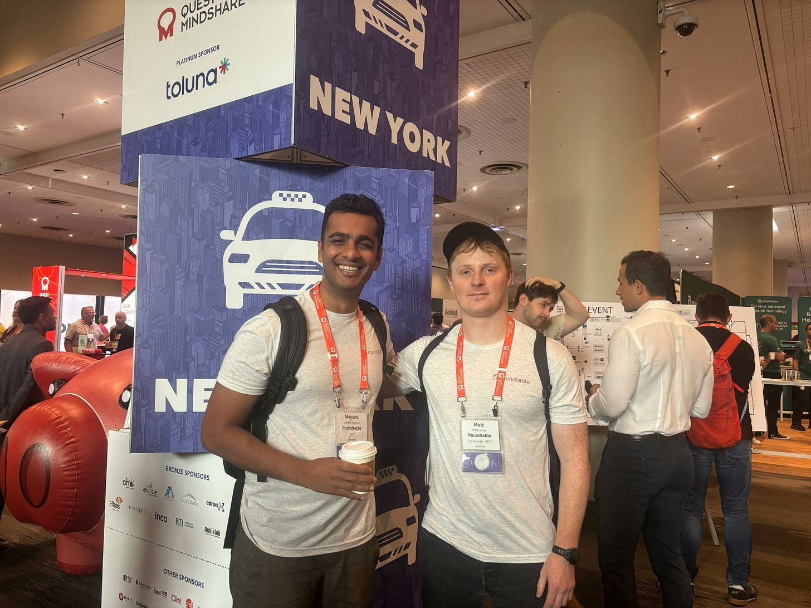

What fraction of the data the buyer has been paying for, for how long, was produced by a human?
The modern market research industry was born from a simple premise: a panel of representative humans sampled outperforms a set of unverified responses.
This premise is no longer true.
In the panel value chain – where businesses gather and analyze data from groups of people – data quality is a marketing function, not operational. This means that companies pay lip service and tout having “high-quality data” for marketing purposes, without employing it in their systems and day-to-day workflow.
None of this is an accident.
Every market research pitch deck in the category carries a heading that says Data Quality or Panel Integrity and bullet points including:
- 99.7% human-verified respondents.
- Industry-leading multi-layer fraud controls.
- Proprietary anti-bot technology.
- Continuous panel hygiene.
- Priceless. Non-negotiable.
Nothing is a methodology, nothing is a falsifiable claim. The slide is the deliverable. A panel needs to tell its own buyers that it measures data quality, but it does not need the measurement to work. It needs the measurement to exist, in a slide deck, preferably labeled in color and using words like priceless and non-negotiable.
Adding to this, every firm has a Quality title, but no firm has a Quality budget owner with authority to enforce standards. Common titles like Chief Data Quality Officer, SVP Global Quality and Research Excellence, Head of Panel Integrity, Director of Data Integrity, VP Respondent Experience don’t hold authority. Each requires a second approval — Legal, Finance, or Ops – whose quarterly KPI is throughput, not accuracy. A Quality title is compensated for the existence of the slide; not whether the numbers behind it hold up.
Five threads I’ve seen in the last 24 months:.
1. A sampling firm’s senior product lead agrees to a pilot, but gets caught up in eight weeks of traveling, limited bandwidth, and making efforts to revisit. When they are ready to move forward, it becomes a negotiation to do less measurement over more time.
2. A brand-ratings agency schedules a kickoff in November, another alignment call in January, a third in February. In April the lead stalls indefinitely. Seven months, no test, but “always top of mind.”.
3. An online research panel signs a contract after three weeks of legal redlines. Ten days after signature, the product lead cancels to build overlapping features and capabilities in-house, invoking our product name in their roadmap. The company refuses to honor the contract financially, and the invoice remains unpaid.
4. A panel executive declines at an industry conference to evaluate our system. The reason is the system is “’too good.”’ They have concluded that measuring their own data quality is more costly than not measuring it.
5. A customer of a research platform experiences 40% fraud and refers us to their vendor. The vendor’s CEO claims to have developed cutting-edge behavioral biometrics in-house and is not interested. A few months later, that same customer is still contacting us for help with fraud.
Let’s pull back the curtain. A research buyer who spends $100,000 a year on panels is probably spending somewhere between $15,000 and $45,000 on answers produced by… nothing. The research industry estimates put 15% to 45% of responses in a typical online panel below the quality screen. Their buyers are making multi-million-dollar decisions based on flawed inputs.
A decade of social psychology relied on data from Amazon Mechanical Turk (MTurk). Experiments shifted from the lab to the Internet, where researchers could deploy tasks for representative samples all throughout the world. By the mid-2010s, the cracks began to show. Meta-analyses popped up in the academic literature grading the quality of MTurk, finding that bots, fraudsters, and other low-quality responses compromised the majority of the participant pool.
It only got worse from there. The replication crisis – where scientists couldn’t accurately repeat the results – was not only p-hacking (where scientists manipulate, or cherry pick data for the desired result). It was also from buying the wrong humans. By 2022, MTurk was producing on the order of 15,000 peer-reviewed academic articles in a single six-month window. Turns out its data layer had been compromised for four years before most of the field admitted it.
In 2024, the U.S. Attorney for the District of New Hampshire indicted eight defendants for a $10 million wire-fraud conspiracy run through two market research companies. They found that since 2014, senior leaders recruited and coached participants on how to pass screener questions, how long to linger on each survey, and how to use VPNs to spoof U.S. IP addresses.
Clients of these panels — brands, agencies, institutions — paid for survey data and did not receive the consumer insights they were hoping for, but rather, fabrication at industrial scale.
The conversation at recent Insights Association and ESOMAR sessions – industry organizations for data analysis and market research – has quietly shifted from “Is there a bot problem?” to “How do we price the ignorance?”
The good news is that nonhumans-acting-as-humans is measurable: it comes in the hesitation between a declarative question and its answer, the overcorrection in a mouse path, the context-dependent variability in keystroke timing. An artificially intelligent agent cannot cheaply mimic all human behavioral dimensions for a survey at a cost less than the money they gain from completing the survey.
Pilots are green-lit at the individual contributor level and killed at Legal or Finance. Trade press will keep naming data quality the top industry priority year after year, while aggregate quality budgets stay flat. A panel that publishes its actual fraud rate openly will be punished by buyers, not rewarded.
The question the industry is going to have to answer is this: what fraction of the data the buyer has been paying for, for how long, was produced by a human? A research operation that cannot answer that question cannot defend its margins.